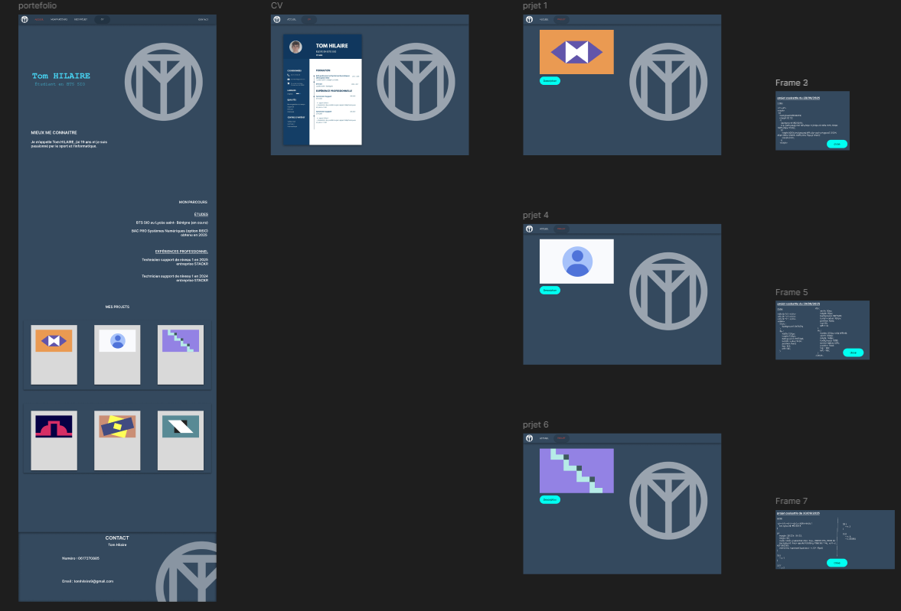
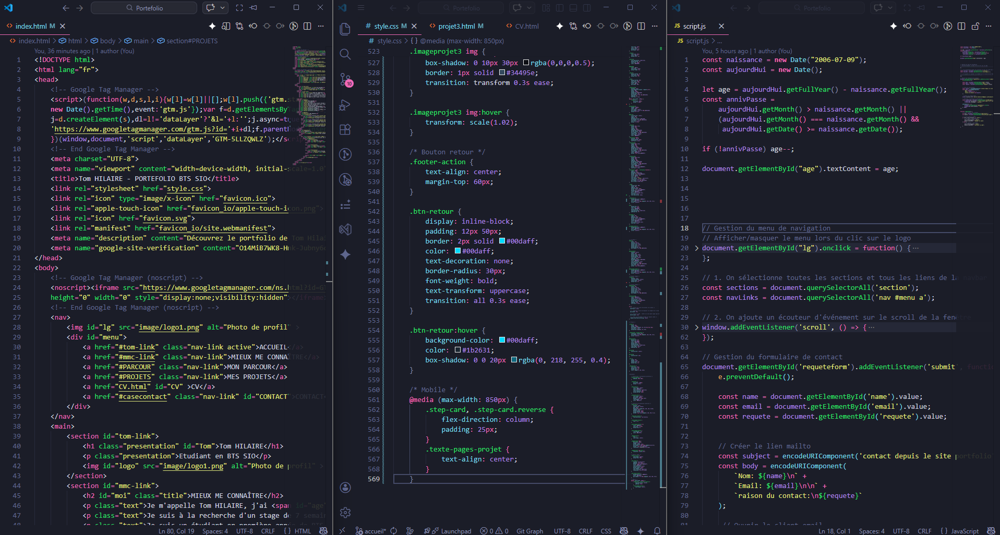
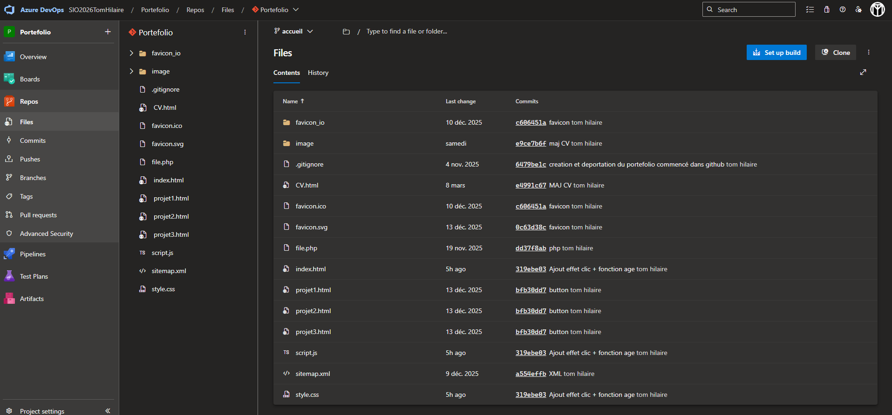
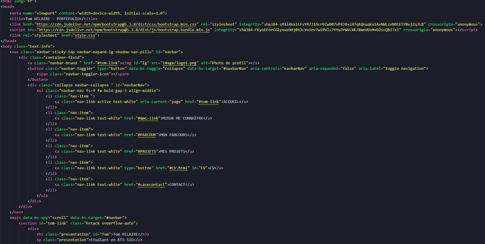

Conception et Déploiement de mon portfolio
Ce projet, réalisé en autonomie et durant ma formation, consiste à concevoir et développer mon portfolio professionnel. L'objectif est de centraliser mes réalisations techniques et de proposer une vitrine interactive accessible aux recruteurs.
1. Conception et Design (UI/UX)
J'ai débuté par une phase de recherche ergonomique pour créer une interface moderne en Dark Mode. L'enjeu était de structurer l'information de manière intuitive afin de faciliter la navigation entre mon parcours, mes compétences et mes projets. Cette étape de conception a permis de définir l'identité visuelle du site avant son intégration.

Maquette figma initial2. Développement Front-End
Le site est développé en HTML5, CSS3 et JavaScript.
- Dynamisme : Le JavaScript gère l'interactivité (animations, boutons de redirection).
- Adaptabilité : L'utilisation des Media Queries assure un rendu Responsive, permettant une consultation optimale sur PC, tablette et smartphone.

Exemple de code HTML/CSS/JS3. Infrastructure et DevOps
Le versionnage est assuré par Git. Pour le déploiement, j'utilise la plateforme Azure DevOps, ce qui me permet de gérer le cycle de vie du projet de manière professionnelle. Le site est actuellement hébergé via Azure App Service.

Illustration du projet dans Azure DevOps
3. Évolution du projet (En cours)
Dans une démarche d'amélioration, je travaille sur une nouvelle version utilisant le framework Bootstrap. Cette mise à jour vise à optimiser la structure du code et à moderniser l'UI/UX, bien qu'elle ne soit pas encore déployée.

Exemple de partie transformer avec Bootstrap